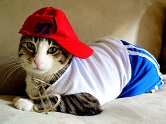
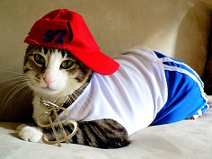

¿Qué es la gatitud?
La gatitud no solo es un concepto, es una actitud y una forma de vivir.
Los catloversvamos por la vida influenciados por nuestro gran amor
a nuestros hermanos felinos y eso es lo que nos da una gran Gatitud.
Visitanos en Yo amo a los gatos